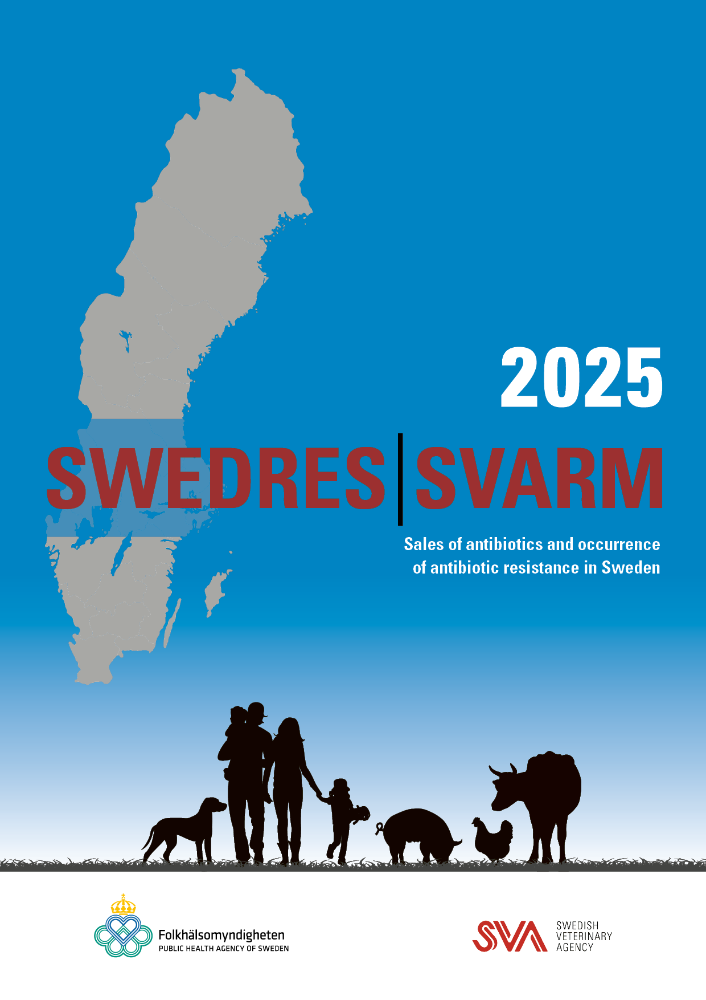

Swedres-Svarm 2025
Welcome

The Swedres-Svarm Report is a collaborative publication by the Public Health Agency of Sweden (Folkhälsomyndigheten) and the Swedish Veterinary Agency (Statens veterinärmedicinska anstalt), analysing sales of antibiotics and the occurrence of antibiotic resistance in Sweden. The report combines data from humans and animals to provide a comprehensive overview of current trends, and has been jointly published for over two decades.
This book is built using the Quarto publishing system, with data presented and visualised using ggplot2, ggiraph, and dt. The source code is available on GitHub.
What is new in this Edition?
The new edition of this annual report has undergone a comprehensive update, featuring:
- Redesigned layout for improved readability and navigation
- Consistent design across all chapters for a cohesive user experience
- Dynamic figures to enhance data visualisation and interactivity
- Data download options for each figure, enabling deeper analysis
Publishing Information:
Published by:
Public Health Agency of Sweden and Swedish Veterinary Agency
Editorial Team:
Hanna Billström, Jennifer Jagdmann and Ragda Obeid - Public Health Agency of Sweden
Oskar Nilsson, Märit Pringle and Krista Tuominen - Swedish Veterinary Agency
Addresses:
Public Health Agency of Sweden
Solna. SE-171 82 Solna, Sweden
Östersund. Box 505, SE-831 26 Östersund, Sweden
Phone: +46 (0) 10 205 20 00
E-mail: info@folkhalsomyndigheten.se
www.folkhalsomyndigheten.se
Swedish Veterinary Agency
SE-751 89 Uppsala, Sweden
Phone: +46 (0) 18 67 40 00
E-mail: svarm@sva.se
www.sva.se
License
Text, tables, and figures may be cited and reprinted only with reference to this report. Images, photographs, and illustrations are protected by copyright.
Suggested citation
Swedres-Svarm 2025. Sales of antibiotics and occurrence of antibiotic resistance in Sweden. Solna/Uppsala
@report{SwedresSvarm2025,
title = {Swedres-Svarm 2025: Consumption of Antibiotics and Occurrence of Antibiotic Resistance in Sweden},
author = {{Public Health Agency of Sweden & The Swedish Veterinary Agency of Sweden}},
year = {2025},
institution = {Folkhälsomyndigheten},
address = {Stockholm, Sweden},
url = {https://folkhalsomyndigheten-rapporter.github.io/swedres-svarm-2025}
}This title and Previous Swedres and Svarm reports are available for download at: www.sva.se/swedres-svarm
Cover by: Ingvar Westerdahl/Thomas Isaksson